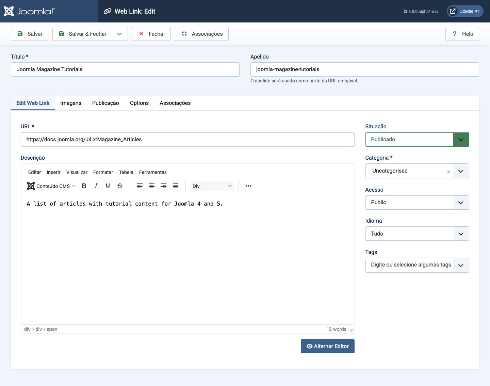
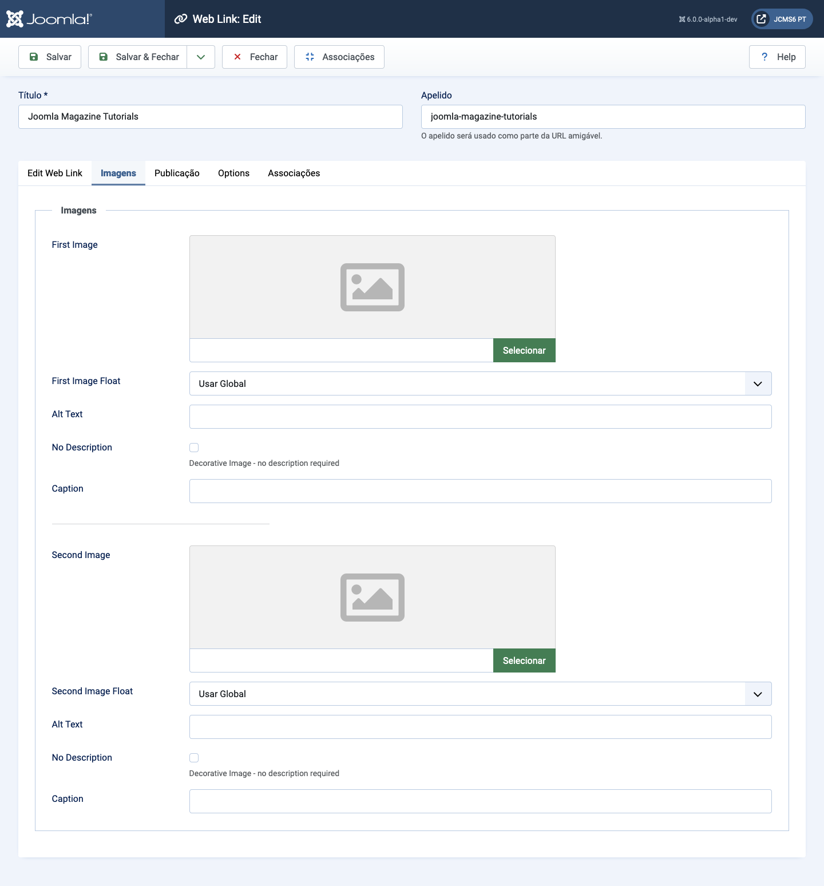
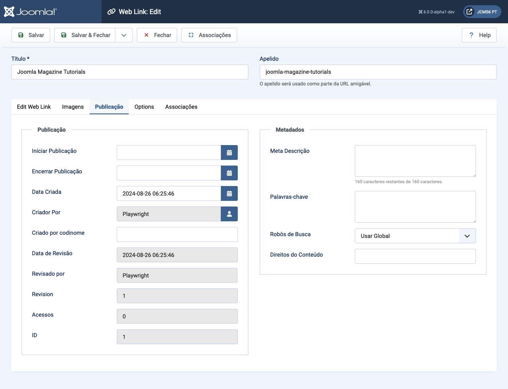
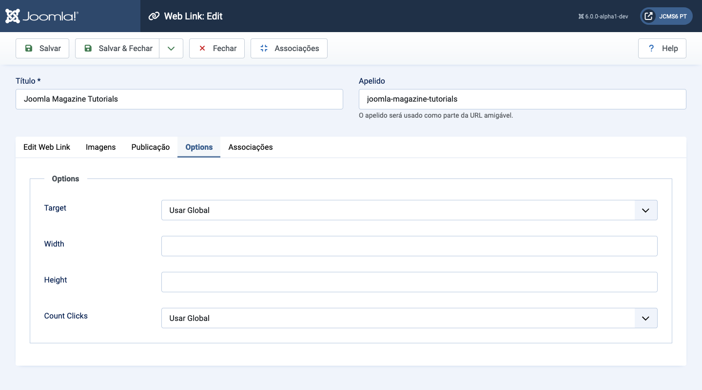

Joomla Help Screens
Link da Web: Editar
Descrição
Este formulário é usado para adicionar um novo Link da Web ou editar um link existente. Observe que você precisa criar pelo menos uma Categoria de Links da Web antes de criar seu primeiro Link da Web.
Elementos Comuns
Alguns elementos desta página são abordados em artigos de Ajuda separados:
Como Acessar
- Selecione Componentes → Web Links → Links no menu do Administrador. Então...
- Selecione o botão Novo na Barra de Ferramentas para criar um novo link. Ou...
- Selecione um título na lista de links para editar um link existente.
Captura de Tela

Campos do Formulário
Painel Esquerdo
- URL A URL do Link da Web.
- Descrição A descrição do item. Categoria, Subcategoria e descrições dos Links da Web podem ser mostradas nas páginas web, dependendo das configurações dos parâmetros. Essas descrições são inseridas usando o mesmo editor que é usado para Artigos.
Aba de Imagens

- Primeira Imagem Clique em Selecionar para selecionar uma imagem para exibir com este item no frontend.
- Float da Imagem Onde colocar a imagem em relação ao texto na página.
- Texto Alternativo Texto alternativo a ser usado para visitantes que não têm acesso a imagens. Este texto é substituído pelo texto da legenda se o texto da legenda estiver disponível.
- Legenda A legenda da imagem.
- Segunda Imagem Clique em Selecionar para selecionar uma imagem para exibir com este item no frontend.
- Float da Imagem (Usar Global/Direita/Esquerda/Nenhum). Onde colocar a imagem em relação ao texto na página.
- Texto Alternativo Texto alternativo a ser usado para visitantes que não têm acesso a imagens. Este texto é substituído pelo texto da legenda se o texto da legenda estiver disponível.
- Legenda A legenda da imagem.
Aba de Publicação

- Início da Publicação Data e hora para começar a publicação. Use este campo se você deseja inserir o conteúdo com antecedência e depois publicá-lo automaticamente em um momento futuro.
- Fim da Publicação Data e hora para terminar a publicação. Use este campo se você deseja que o conteúdo seja alterado automaticamente para o estado Não Publicado em um momento futuro (por exemplo, quando não for mais aplicável).
- Data de Criação Este campo é preenchido com a data e hora atual quando o Artigo foi criado. Você pode inserir uma data e hora diferentes ou clicar no ícone do calendário para encontrar a data desejada.
- Criado Por Nome do Usuário Joomla! que criou este item. Esta será preenchido com o usuário que está atualmente logado. Se você deseja mudar para um usuário diferente, clique no botão Selecionar Usuário para selecionar um usuário diferente.
- Pseudônimo do Autor Este campo opcional permite que você insira um pseudônimo para o Autor deste Artigo. Isso permite exibir um nome de Autor diferente para este Artigo.
- Data da Modificação (Informativo apenas) Data da última modificação.
- Modificado Por (Informativo apenas) Nome de usuário que fez a última modificação.
- Revisão (Informativo apenas) Número de revisões deste item.
- Visualizações O número de vezes que um item foi visualizado.
- ID Este é um número de identificação único para este item, atribuído automaticamente pelo Joomla!. Ele é usado para identificar o item internamente, e você não pode alterar este número. Ao criar um novo item, este campo mostra 0 até você salvar a nova entrada, momento em que um novo ID é atribuído a ele.
- Meta Descrição Um parágrafo opcional a ser usado como a descrição da página na saída HTML. Isso geralmente é exibido nos resultados dos motores de busca. Se preenchido, isso criará um elemento meta HTML com um atributo name de "description" e um atributo content igual ao texto inserido.
- Meta Palavras-chave Entrada opcional para palavras-chave. Devem ser inseridas separadas por vírgulas (por exemplo, "gatos, cachorros, animais de estimação") e podem ser inseridas em maiúsculas ou minúsculas. (Por exemplo, "GATOS" corresponderá a "gatos" ou "Gatos").
- Referência Externa Uma referência opcional usada para vincular a fontes de dados externas. Se preenchido, isso criará um elemento meta HTML com um atributo name de "xreference" e um atributo content igual ao texto inserido.
- Robôs As instruções para "robôs" da web que navegam nesta
página.
- Usar Global: Usar o valor definido em Componente→Opções para este componente.
- Indexar, Seguir: Indexar esta página e seguir os links nesta página.
- Não indexar, Seguir: Não indexar esta página, mas seguir os links na página. Por exemplo, você pode fazer isso para uma página de mapa do site onde você deseja que os links sejam indexados, mas não deseja que esta página apareça nos motores de busca.
- Indexar, Não seguir: Indexar esta página, mas não seguir nenhum link na página. Por exemplo, você pode querer fazer isso para um calendário de eventos, onde você deseja que a página apareça nos motores de busca, mas não deseja indexar cada evento.
- Não indexar, não seguir: Não indexar esta página nem seguir nenhum link na página.
- Direitos de Conteúdo Descreva quais direitos outros têm para usar este conteúdo.
Aba de Opções

- Destino Como abrir o link. As opções são:
- Abrir na janela pai. Abrir o link na janela do navegador atual, permitindo a navegação Voltar e Avançar.
- Abrir em uma nova janela. Abrir o link em uma nova janela do navegador, permitindo a navegação Voltar e Avançar.
- Abrir em popup. Abrir o link em uma janela pop-up.
- Modal. Abrir o link em uma tela modal.
- Largura Largura da Janela IFrame. Insira um número de pixels ou insira uma porcentagem (%). Por exemplo, "550" significa 550 pixels. "75%" significa 75% da largura da página.
- Altura Altura da Janela IFrame. Insira um número de pixels ou insira uma porcentagem (%). Por exemplo, "550" significa 550 pixels. "75%" significa 75% da altura da página.
- Contar Cliques Se deve ou não manter o controle de quantas vezes este link web foi aberto.
Traduzido por openai.com